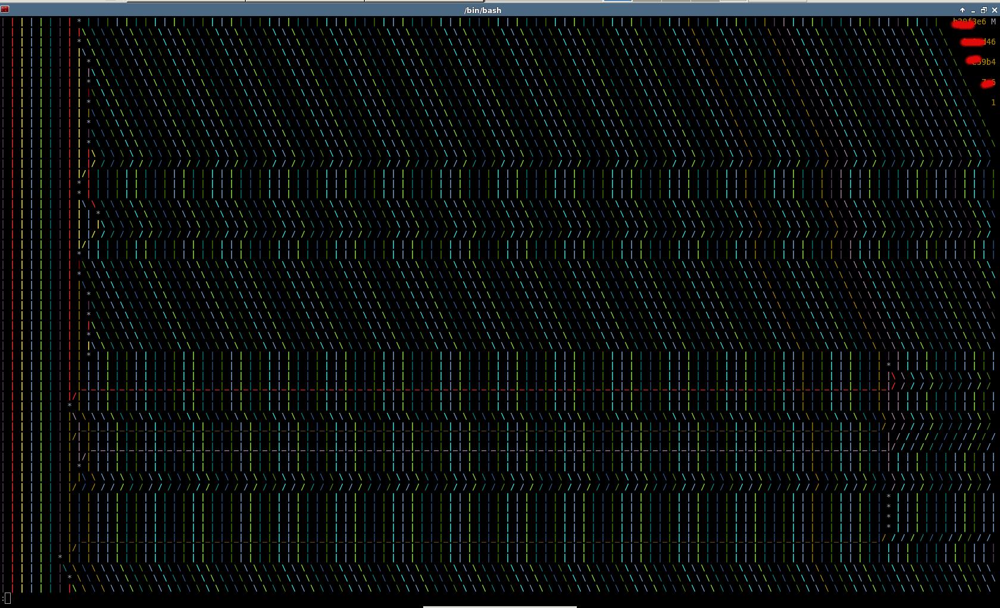
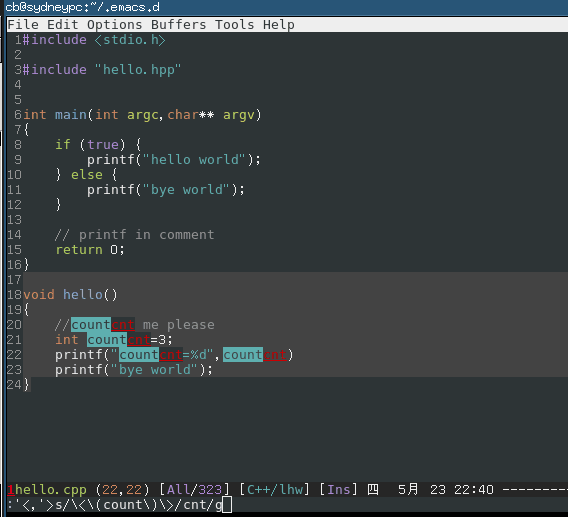

set up nfs server on ArchLinux
The purpose of set up nfs server is to watch video stored on server through my android devices.
sudo pacman -S nfs-utils # donnot touch /etc/idmapd.conf mkdir -p /srv/nfs4/z
add following lines into /etc/fstab:
UUID=986C96596C9631CC /mnt/z ntfs-3g defaults,nofail 0 2
/mnt/z /srv/nfs4/z none bind,nofail 0 0
add this line into /etc/exports:
/srv/nfs4/z 192.168.0.0/24(async,rw,no_subtree_check,nohide,no_root_squash)
make sure change in /etc/exports to take effect:
sudo exportfs -ra
now enable and start the services:
sudo systemctl enable rpc-idmapd sudo systemctl start rpc-idmapd sudo systemctl enable rpc-mountd sudo systemctl start rpc-mountd
An example to abuse the git merge
WARNING, this is BAD practice. I'm showing you anti-pattern you'd better avoid.
The work flow is simple at the beginning. There is only one master branch where several developers submit the code.
Then come bad rules:
- Rule 1, any feature should be done on new branch (this rule is actually good if without next three rules)
- Rule 2, `git rebase` is forbidden and any minor branch created by developers should be publicized immediately.
- Rule 3, keep using your same feature branch forever even it's behind master branch for a very long time.
- Rule 4, `git merge` between feature and master branches frequently
After three months developement, this is the result of `git log –graph –oneline`: 
Can you see the "M" at the top right corner. It's "M" from "Merge".
Use vimdiff to resolve git/subversion/mercurial merge conflicts effectively
You can jump to No description for this link section at the end of this article.
I use git as an example of version control software. But you can use any other version control software instead.
The reasons to use vimdiff to do the merge?
- It's free (vim)
- It works on any OS
- It works in shell
- Keyboard only
Setup
Setup vimdiff (OPTIONAL)
The vimdiff as a merge tool will display several buffers to show YOURS/THEIRS/ORIGINAL code.
First, add following code into your ~/.vimrc,
set laststatus=2 "show the status line
set statusline=%-10.3n "buffer number
The purpose of above two lines is to display buffer number at the status line of vim. It's OPTIONAL. You don't need see the buffer number if you are familiar with the all the buffer's position. The left top is buffer number 2. The middle top is buffer number 3. The right top is buffer number 4.
Second, if you know the buffer number, you can use hot key like ",2" (press comma first, then press two key as quickly as possible) to pull change from buffer number 2. Add below code into your ~/.vimrc to set up hot keys:
map <silent> <leader>2 :diffget 2<CR>
map <silent> <leader>3 :diffget 3<CR>
map <silent> <leader>4 :diffget 4<CR>
Setup git
Run below commands in shell,
git config --global merge.tool vimdiff
git config --global mergetool.prompt false
Usage
Create a "hello world" project
I setup a "hello world" project at https://github.com/redguardtoo/test-git-mergetool for your practice.
It has three branches "master", "bob", and "chen",
git clone https://github.com/redguardtoo/test-git-mergetool.git
cd test-git-mergetool
git checkout -b bob origin/bob # create local mirror of bob branch
git checkout -b chen origin/chen # create local mirror of chen branch
Bob and Chen has edited same files. So please merge branch "bob" into "master" at first. Then merge from "chen". The merge conflicts will be created.
git branch # double check that we got three local branches: master, bob, chen
git checkout master # set master branch as main branch
git merge bob #this is ok, because bob is the first one to merge changes
git merge chen # now some conflicts created because Bob has already edited and merged same files
Resolve merge conflict
Now start merge tool,
git mergetool
Git will invoke vimdiff with the following window layout. There are four buffers in this layout:

Here is the explanation of each buffer:
| Buffer | Explanation | Buffer Number |
|---|---|---|
| THEIRS (LOCAL) | contents of the file on the current branch | 2 |
| BASE | common base for the merge | 3 |
| YOURS (REMOTE) | contents of the file to be merged. | 4 |
| MERGED | The file containing the conflict markers. You need edit and commit this file. | 1 |
Some people name THEIRS and YOURS buffer to LOCAL and REMOTE buffer. That's fine because names are just names. The point is that the top middle buffer is the BASE one which contains the original code before Bob and Chen committing any code. And the bottom buffer is the mess which contains resolved/unresolved conflicts where you actual editing work happens.
You could press hot key ,2,
Then you pick the content from THEIRS buffer (the top left buffer). It means you will use the Bob's code and discard Chen's code in MERGED buffer.
You could press hot key ",3", Then you pick the content from BASE buffer (the top middle buffer). It means you will discard either Bob's code or Chen's code in MERGED buffer.
You could press hot key ",4", Then you pick the content from YOURS buffer (the top right buffer). It means you will use Chen's code and discard Bob code in MERGED buffer.
Or you can edit the content directly in MERGED buffer. Anyway, git only care about the file binding to MERGED buffer. Any other buffer will be ignored by git.
You can use hot key [c and ]c to navigate to previous/next conflict (including the conflict resolved by git automatically) in current file which is binding to MERGED buffer.
After finishing editing of the conflicting file in MERGED buffer, you can use hot key :xa to exit vimdiff. Git will open next conflicting file vimdiff automatically.
When you have resolved all the conflicts, follow the hint of git to commit your changes.
Tips
- fugitive.vim (https://github.com/tpope/vim-fugitive) can do this too. Actually it can do much more git stuff than merge. I cannot write this article without reading its code
- You can use Emacs to do the similar job (http://stackoverflow.com/questions/1817370/using-ediff-as-git-mergetool). For me, Emacs start up time is too much for this task. Some people use
emacsclientwhich has other overhead I don't like - If you prefer GUI, use command line `git mergetool -t gvimdiff` instead
- The
:diffgetcommand is valid if and only if there are MARKED conflicts in merged buffer. If there is NO marked string like ">>>>" or "<<<<<" around current change (you can jump to previous/next change by press[cor]c), it means the git have automatically resolved potential conflict for you. Reviewing is still wise because git is not as smart as human - If you prefer navigating between the unresolved conflicts only, you can install Tim Pope's vim-unimpaired and use hot key "[n" and "]n" to do the navigation
- I map
[nand]nto more handy hot keys:
map ]] ]n
map [[ [n
You can use command line like "git mergetool -t vimdiff" to start vimdiff from git.
So the minimum set up is adding three lines of code into your ~/.vimrc:
map <silent> <leader>2 :diffget 2<CR> :diffupdate<CR>
map <silent> <leader>3 :diffget 3<CR> :diffupdate<CR>
map <silent> <leader>4 :diffget 4<CR> :diffupdate<CR>
Then you can press hot key ",2" ",3" ",4" in vimdiff to pull change from top three buffer. The bottom buffer is for editing the code with markers which is actually your only work space.
":help vimdiff" for other hot keys.
#+image/git-merge-tool-nq8.png 
subversion/mercurial
Until now I'm focusing on how to tweak the vimdiff UI because the git has already setup the basic vimdiff layout for us. So we just follow the Git layout in other VCS.
subversion
Insert below code into ~/.subversion/config:
[helpers]
merge-tool-cmd = vimdiff.sh
Content of vimdiff.sh
#!/bin/sh
#
# Step 1:
# When you get following options during svn merge command, select option 'l'. This is to launch external tool to resolve conflicts.
#
# Conflict discovered in 'main.h'.
# Select: (p) postpone, (df) diff-full, (e) edit,
# (mc) mine-conflict, (tc) theirs-conflict,
# (s) show all options: l
# Step 2: Now vim will be opened in diff mode with 3 files - mine, theirs and merged. Make the required changes in the merged file, and do save and exit (:xa).
# Step 3:
# Now below options will appear again, select 'r' (to accept the merged version) now.
BASE=${1}
LOCAL=${2}
REMOTE=${3}
MERGED=${4}
WCPATH=${5}
# copied from from git's vimdiff script
# @see https://github.com/git/git/blob/master/mergetools/vimdiff
vimdiff -f -d -c 'wincmd J' "$MERGED" "$LOCAL" "$BASE" "$REMOTE"
mercurial
Insert below code into ~/.hgrc:
[ui]
merge = vimdiff
[merge-tools]
vimdiff.executable = vim
vimdiff.args = -f -d -c 'wincmd J' "$output" "$local" "$base" "$other" +close +close
open README under git root directory in Emacs
I often need update my README files at the root directory of my project which is always managed by git.
As a lazy guy, I' rather use some hotkey to open that README.
So if you add below elisp code into your ~/ .emacs, you can use hot key `C-c C-f` to open the README:
(defun open-readme-in-git-root-directory () (interactive) (let (filename (root-dir (locate-dominating-file (file-name-as-directory (file-name-directory buffer-file-name)) ".git")) ) ;; (message "root-dir=%s" root-dir) (and root-dir (file-name-as-directory root-dir)) (setq filename (concat root-dir "README.org")) (if (not (file-exists-p filename)) (setq filename (concat root-dir "README.md")) ) ;; (message "filename=%s" filename) (if (file-exists-p filename) (switch-to-buffer (find-file-noselect filename nil nil)) (message "NO README.org or README.md found!")) )) (global-set-key (kbd "C-c C-f") 'open-readme-in-git-root-directory)
,,,,
How to measure a Emacs geek
Me, for example.
The first day I changed my .emacs.d:
master $ git log --pretty=format:'%C(yellow)%h%Creset %ad %s %Cred(%an)%Creset' --date=short|grep "`git config user.name`"|tail -n1 11fd85f 2011-08-31 eim (Chinese input method) (chen bin)
How many times I modified my emacs.d since then:
master $ git log --pretty=format:'%C(yellow)%h%Creset %ad %s %Cred(%an)%Creset' --date=short|grep "`git config user.name`"|wc -l 672
My emacs.d at github: https://github.com/redguardtoo/emacs.d
The reliable way to access system clipboard from Emacs
CREATED:
UPDATED:
The Emacs clipboard questions has been asked so many times. Yet few give a complete and reliable solution.
Only a dedicated project maintained by professional developer could solve this issue once for all.
simpleclip is such a project.
I only use its APIs `simpleclip-get-contents` and `simpleclip-set-contents`.
Here is my setup:
(require 'simpleclip)
(defun copy-to-x-clipboard ()
(interactive)
(let ((thing (if (region-active-p)
(buffer-substring-no-properties (region-beginning) (region-end))
(thing-at-point 'symbol))))
(simpleclip-set-contents thing)
(message "thing => clipboard!")))
(defun paste-from-x-clipboard()
"Paste string clipboard"
(interactive)
(insert (simpleclip-get-contents)))
;; Press `Alt-Y' to paste from clibpoard when in minibuffer
(defun my/paste-in-minibuffer ()
(local-set-key (kbd "M-y") 'paste-from-x-clipboard))
(add-hook 'minibuffer-setup-hook 'my/paste-in-minibuffer)
How to refactor/rename a variable name in a function efficiently
As we dicussed in Emacs community at Google+. Although multiple-cursor is good for this task, I cannot use it because it conflicts with my favourite evil-mode (Vim simulation in Emacs).
There is another emacs plugin called iedit which could do the similar job (I usually use its command called iedit-mode-toggle-on-function)
Though iedit is good, there is still room for improvement. When using iedit-mode-toggle-on-function, we need press key twice to rename the variable name. Once to enable it, twice to disable it.
Magnar Sveen pointed out in the G+ discussion that the key point we need plugins like multiple-cursor or iedit-mode is that we can see all the changes while doing the editing.
This reminds me that evil-mode has a excellent regex string replacing mode which also show the changes when you are typing EACH character of new string.
So by using evil-mode's default regex replacing command, I can implement similar feature even more efficiently then iedit-mode!
Here is my elisp code:
(defun evilcvn-change-symbol-in-defun () "mark the region in defun (definition of function) and use string replacing UI in evil-mode to replace the symbol under cursor" (interactive) (let ((old (thing-at-point 'symbol))) (mark-defun) (unless (evil-visual-state-p) (evil-visual-state)) (evil-ex (concat "'<,'>s/" (if (= 0 (length old)) "" "\\<\\(") old (if (= 0 (length old)) "" "\\)\\>/")))) ) (global-set-key (kbd "C-c ; s") 'evilcvn-change-symbol-in-defun)
Put you cursor above a symbol/variable and press hot key "Ctrl-c ; s", then the regex to replace that symbol is automatically created and inserted into mini-buffer. Now you only need type new string and watch.
This is the screen shot (I renamed variable "count" into "cnt" in C++ function hello): 
How to write javascript/html code quickly
mixing code of javascript and html is a big problem
If we mix the javascript code into html file as below:
<ul> <% for(var key in service.get('Detail')){ %> <% if(key!='creditcard_number){ %> <li> <label for='<%= key %>'><%= key %></label> <div id='<%=key %>'><%= service.get('Details')[key] %></div> </li> <% }%> <% } %> </ul>
Then it's hard to write/debug/fix the javascript code because:
- html code becomes noise for javascript development.
- The syntax checker for javascript will not work properly.
If we mix the html code into javascript file as below:
for(var key in service.get('Detail')){ if(key!='creditcard_number'){ htmlRender(formatString("<li><label for='%s'>%s</label><div id='%s'>%s</div>",key,key,service.get('Details')[key])); } }
Now html code becomes hard to write/debug/fix because:
- javascript code becomes noise for html development.
- The syntax checker for html will not work properly.
In summary, mixing code in different language syntax will:
- make code hard to read
- make syntax checker dysfunctional
These are the top two causes why we can not code fast in real application.
Use functional programming to avoid mix the javascript and html
So here is our objective:
- We need put the business logic into javascript file. The logic usually contains "for/while/if" statements.
- Html tags like "<div>/<span>/<ul>/<li>" need be placed in html file.
The solution is actually simple. We just need apply a little bit of functional programming skill.
So here is our html file in functional programming style:
<% forEachAttributeInService(service,function(service,key) { %>
<li>
<label for='<%= key %>'><%= key %></label>
<div id='<%=key %>'><%= formatServiceAttributes(service,key) %></div>
</li>
<% }); %>
Here is the javascript file:
function forEachAttributeInService(service,fn) { for(var key in service.get('Detail')){ if(key!='creditcard_number'){ fn(service,key) } } } function formatServiceAttributes(service,key) { return service.get('Details')[key]; }
Now let's check what happens.
In the html file, the business logic is converted into combination of functional calls.
In javascript file, all the code dealing with hard coded html tags are converted to the call of anonymous functions. Those anonymous function is basically dump of html tags which is defined in html file.
You can use this technique to convert any existing code into new style. For example, a simple "if else" statement could be re-written in new style:
/* code in old style */ if (true){ console.log('<li>YES</li>'); } else { console.log('<li>NO</li>'); } /* code in new style */ function func_if_else(f1,f2,f3){ if(f1()){ f2(); } else { f3(); } } /* the execution of func_if_else() */ func_if_else(function(){ return true }, function(){ console.log('<li>YES</li>'); }, function(){ console.log('<li>NO</li>'); });
This is a kind of radical example. I'm only demonstrating the power of new style. I'm not suggesting you should convert any logic statement into function call. New style is not a silver bullet. It's only a useful if used properly in right timing.
The most efficient way to `git add` files in dired-mode
Add following code into your .emacs, then use "/" to execute `git command` on your marked files in dired-mode:
(defun diredext-exec-git-command-in-shell (command &optional arg file-list) "Run a shell command `git COMMAND`' on the marked files. if no files marked, always operate on current line in dired-mode " (interactive (let ((files (dired-get-marked-files t current-prefix-arg))) (list ;; Want to give feedback whether this file or marked files are used: (dired-read-shell-command "git command on %s: " current-prefix-arg files) current-prefix-arg files))) (unless (string-match "[*?][ \t]*\\'" command) (setq command (concat command " *"))) (setq command (concat "git " command)) (dired-do-shell-command command arg file-list) (message command)) (eval-after-load 'dired '(define-key dired-mode-map "/" 'diredext-exec-git-command-in-shell))
For example, say you set the alias "a" for git command "add" in your $HOME/.gitconfig.
In order to `git add` files, you marked files in dired-mode and press "/", then press "a". The command `git a(dd)` will be executed.
The reason to use git in dired-mode is simple. I'm working for some big enterprise application. You know the enterprise guys have the tendency to create lots of small modules/files for one feature. So I need do lots of `cp files somewhere` and `git add files` things these days.
Thanks all the Emacs geeks on the Google+ who enlighten me.
How to split album into different flac and tag them under Gentoo Linux
Install CLI tools
# mac to support ape
sudo USE="alac flac mac shorten sox wavpack" emerge media-sound/shntool
sudo emerge cuetools
Download script
See https://bbs.archlinux.org/viewtopic.php?id=58766 for the source of bash script.
Here is the full content of the bash script:
#!/bin/bash
# split image file (flac, ape, wav, etc.) according to cue-file
if [ -f "$1" ]; then
i=0
for cuefile in *.cue; do
i=$(($i + 1))
done
if [ $i -eq 1 ]; then
# precies 1 cuesheet gevonden
if grep -q "INDEX 01 00:00:00" *.cue ; then
nice shntool split -t "%n %t" -f *.cue "$1"
else
echo "The first track has a pre-gap. Shntool will cut that off and put it in a seperate file."
echo "You don't want that. Please modify the cuesheet from:"
grep -m1 "INDEX 00" *.cue
grep -m1 "INDEX 01" *.cue
echo "to:"
echo " INDEX 01 00:00:00"
exit 1
fi
elif [ $i -eq 0 ]; then
echo "No cuesheet found in the current directory."
exit 1
elif [ $i -gt 1 ]; then
echo "$i cuesheets found in the current directory. Please remove the superfluous cuesheets."
exit 1
fi
else
echo "Split image file (flac, ape, wav, etc.) according to cue-file."
echo "Output files are in FLAC."
echo "Usage: `basename $0` <image-file>"
exit 1
fi
echo
album=`grep -m 1 TITLE *.cue | cut -d\" -f2`
artist=`grep -m 1 PERFORMER *.cue | cut -d\" -f2`
for file in [0-9]*.wav; do
echo "Encoding $file"
if [[ ${file:0:1} == 0 ]] ; then
tracknr=${file:1:1}
else
tracknr=${file:0:2}
fi
title=`echo ${file:2} | sed -e "s/.wav$//"`
nice flac -s -T "artist=$artist" -T "album=$album" -T "title=$title" \
-T "tracknumber=$tracknr" "$file" && rm "$file"
done
Put the script somewhere and name it to cue2flac
Start conversion
# convert the ape to corresponding wav file, for example, "a.ape" is converted to "a.ape.wav"
find . -name '*.ape'|xargs -I {} ffmpeg -i {} {}.wav
# split wav and convert it to flac, make sure the *.cue exists in current directory
cue2flac a.ape.wav
# do the cleaning (OPTIONAL)
rm *.ape *.wav